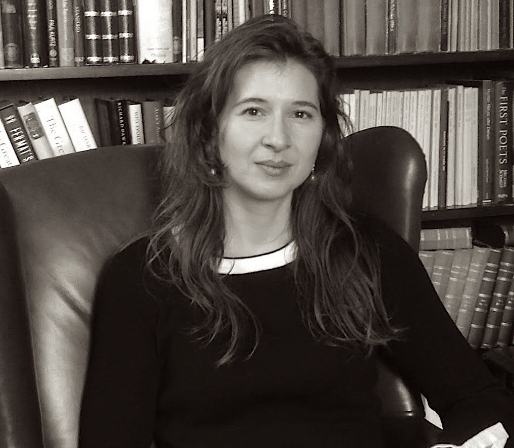

Research
The research of my group is focused on star-exoplanet relationship. By using theory and numerical simulations, we research the interaction of exoplanets with their host star's wind. Our research allows us to investigate how (and whether) these interactions can produce detectable observational signatures, how the stellar wind can affect planetary magnetospheres, how it shapes escape in close-in planets, among other physical processes. Our research therefore can supply more detailed diagnostics of the wind interaction with exoplanets, guiding observers towards the most promising systems to host detectable signatures of such interactions. Our numerical and theoretical work is further complemented by numerous collaborations with observers.
Would you like to learn more? I have written reviews and overviews on stellar winds and star-planet interactions recently. These selected materials are adequate for MSc/PhD student level and above. They can also be useful for non-specialists who would like to get more familiar with these fields.
Publications and CV
For more details on our work, please check my list of publications in ADS. My CV can be found in Orcid.
Group
Current group members
- Assoc. Prof. Aline Vidotto (Principal Investigator)
- Andrew Allan (PhD Student)
- Stephen Carolan (PhD Student)
- Dr Gopal Hazra (Postdoctoral Scholar)
- Robert Kavanagh (PhD Student)
- Amanda Mesquita (PhD Student)
- Dr Donna Rodgers-Lee (Postdoctoral Scholar)
Former group members
- Dr Dualta O Fionnagain (PhD student, graduated in 2020)
- Dr Carolina Villarreal D'Angelo (IRC Postdoctoral Fellow until 2020)
- Dr Daria Kubyshkina (Postdoctoral Scholar until 2021)
Open positions
At this time, all positions in my group have been filled. If you are interested in joining my group, there are several possibilities, including individual (independent) fellowship calls that a prospective candidate could apply to. Please, get in touch!
About me
I am an Associate Professor in Leiden Observatory, at Leiden University, where I am the principal investigator of the ERC Consolidator project ASTROFLOW, which investigates the interaction between stellar and planetary outflows. Prior to joining Leiden in September 2021, I was an academic at Trinity College Dublin, Ireland, and, before that, I held independent research fellowships from the Royal Astronomical Society (at University of St Andrews) and from the Swiss National Science Fundation (at Geneva Observatory). I obtained my PhD from the University of Sao Paulo, in (patria amada) Brazil.
Contact
Twitter: @AlineVidotto
E-mail: vidotto@strw.leidenuniv.nl
Leiden Observatory, Leiden University
Niels Bohrweg 2
2333 CA Leiden
the Netherlands